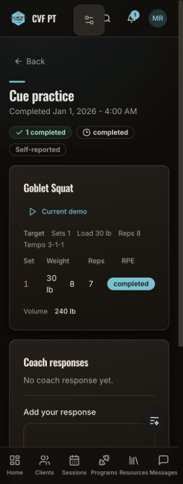
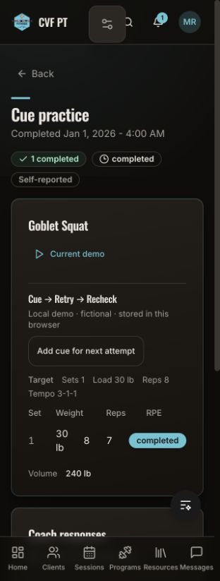
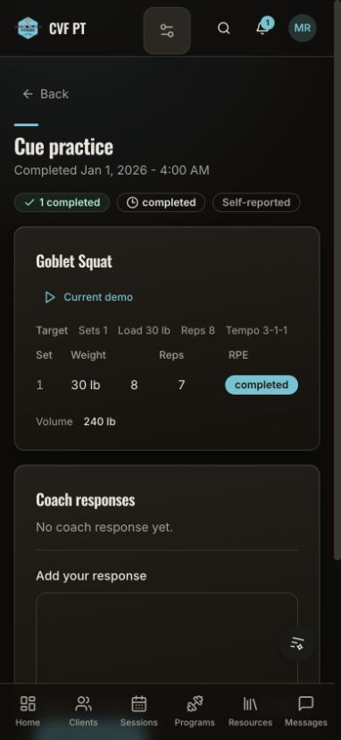
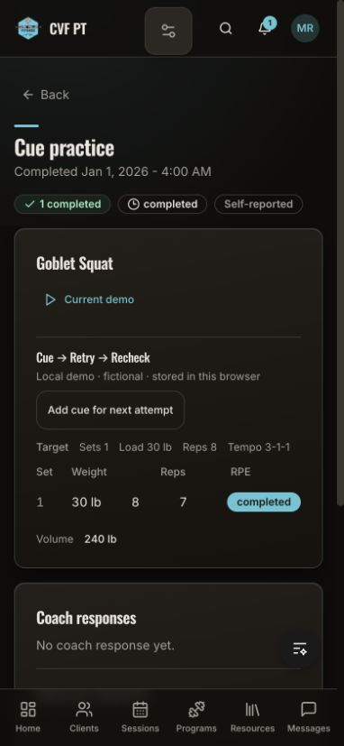
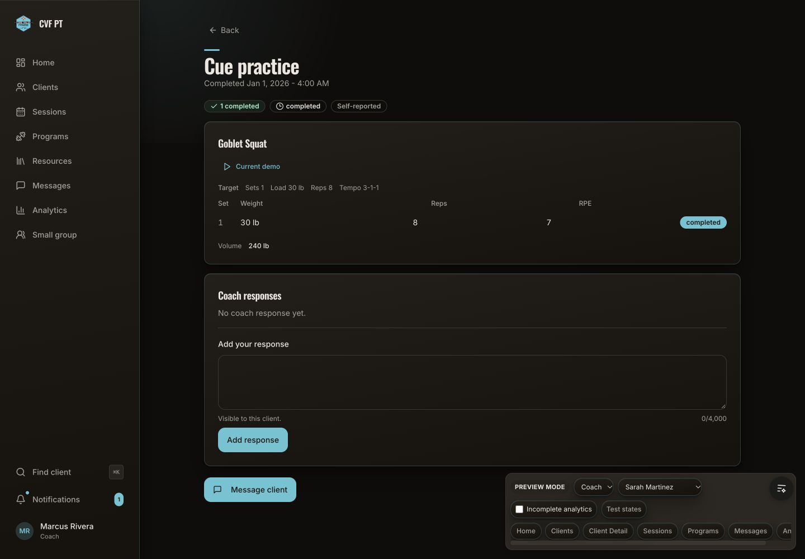
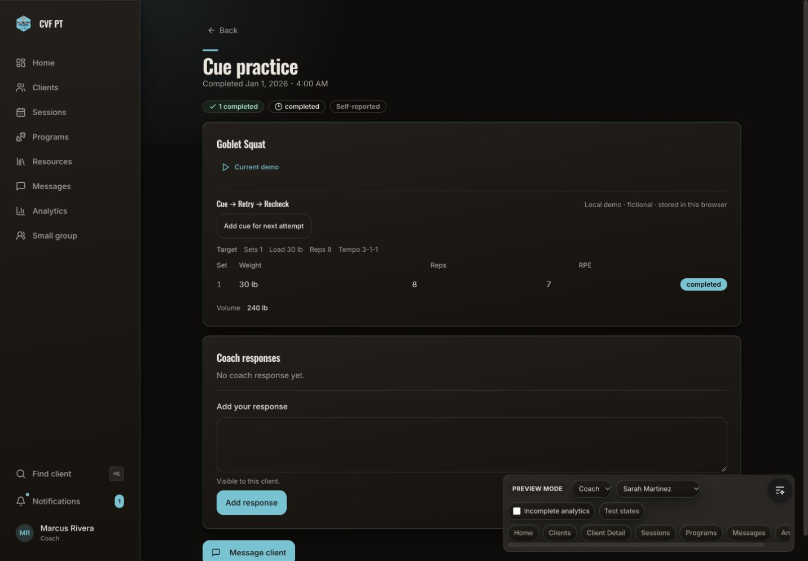
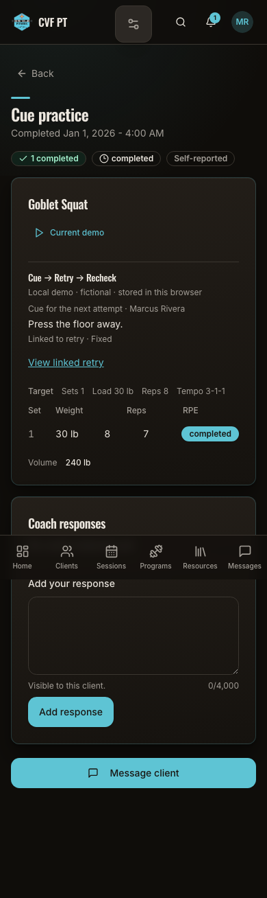
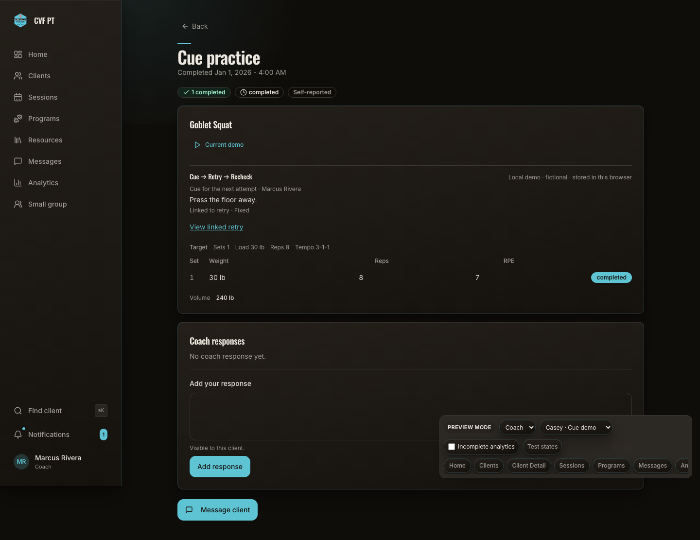

Durable local demonstration, fictional data only. Production unchanged.
The existing workout detail gains a compact per-attempt cue action, distinct from the original prescription and workout response. Same synthetic workout, dark theme and top-of-page state in each pair. No new visual identity or signature direction is proposed.
Baseline: 84b47186ba8a1adf7559ff96a16eca265a0e4461, with only the candidate’s isolated fictional seed added so the same client/exercise/set can render. Proposed source checksums and raster dimensions are in the manifest; the task handoff records the exact final commit. IAB captures omit some scrollbar pixels; these are browser emulations.






Created cue → ordinary assigned workout → performed set → completed retry → coach Fixed verdict → page/tab reopen. Original metrics stay intact. These are full-page automated Chromium captures.


Pending/fixed/partial/nochange, cancelled cues, stale source/retry, repeated submissions, wrong client, storage faults and two-tab races have separate automated coverage. Hosted security/persistence and real devices remain outside this local delivery.